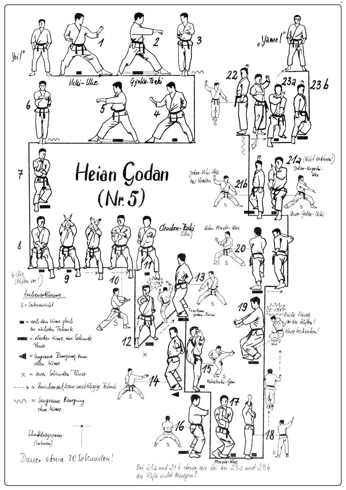

Heian Godan

- Yoi (divaricando la gamba destra).
- Sposto la gamba sinistra verso sinistra e scendo in Kokutzu Dachi sinistro parando Uchi Uke sinistro e attacco Tzuki destro a 45°.
- Richiamo la gamba sinistra in Eisoku Dachi e eseguo Mawashi Tzuki sinistro lentamente.
- Sposto la gamba destra verso sinistra e scendo in Kokutzu Dachi destro parando Uchi Uke destro e attacco Tzuki sinistro a 45°.
- Richiamo la gamba destra in Heisoku Dachi e eseguo Mawashi Tzuki destro lentamente.
- Avanzo in Kokutzu Dachi destro e paro Morote Uke destro.
- Scendo in Zenkutsu Dachi caricando al fianco destro Juji Uke Gedan.
- Richiamo le braccia al plesso solare ed eseguo Juji Uke Jodan a mani aperte.
- Senza staccare i polsi ruoto le mani e chiudo i pugni contemporaneamente richiamando al fianco destro e attacco in Tettsui Uchi sinistro.
- Avanzo in Zenkutsu Dachi e attacco Oi Tzuki destro. Kiai.
- Eseguo Mikazuki destro in Mawatte mentre scendo eseguo Soto Uke destro che prosegue in Gedan Barai destro.
- Carico ed eseguo Haishu Uke sinistro cambiando fronte.
- Eseguo Mikazuki Geri Uchi destro sul palmo sinistro scendendo in Kiba Dachi eseguo Mawashi Empi Uchi destro colpendo il palmo sinistro.
- Unisco il piede sinistro incrociando il destro in Kosa Dachi e paro in Morote Uke destro.
- Allargo il piede sinistro in Teiji Dachi appoggiando solo la punta del piede sinistro ed eseguo Morote Age Tzuki destro.
- Eseguo un salto di 180° richiamando gambe e pugni ai fianchi e atterrando in Kosa Dachi basso eseguo Juji Uke Gedan, Kiai.
- Mi sposto a 90° verso destra e andando in Zenkutsu Dachi eseguo Morote Uke.
- Sposto la gamba sinistra e ruotando il busto seguo contemporaneamente Gedan Barai sinistro mano aperta e Age Uke destro mano aperta.
- Ruoto le anche andando in Zenkutsu Dachi ed eseguo Shuto Uke sinistro all'orecchio e Nukite destro Gedan con il palmo verso l’alto.
- Inverto le braccia eseguendo Gedan Barai sinistro Uchi Uke destro e andando in Hidari Kokutzu Dachi.
- Richiamo la gamba sinistra in Teiji Dachi tenendo ferme le braccia.
- Eseguo una parata con il taglio interno della mano (Haito Uke) sinistra e Gedan Barai destro mani aperte.
- Avanzo andando in Zenkutsu Dachi ed eseguo Shuto Uke destro all'orecchio e Nukite sinistro Gedan.
- Inverto le braccia eseguendo Gedan Barai destro e Uchi Uke sinistro e andando in Migi Kokutzu Dachi.
- Yame! Richiamo la gamba destra e torno in posizione di Yoi!